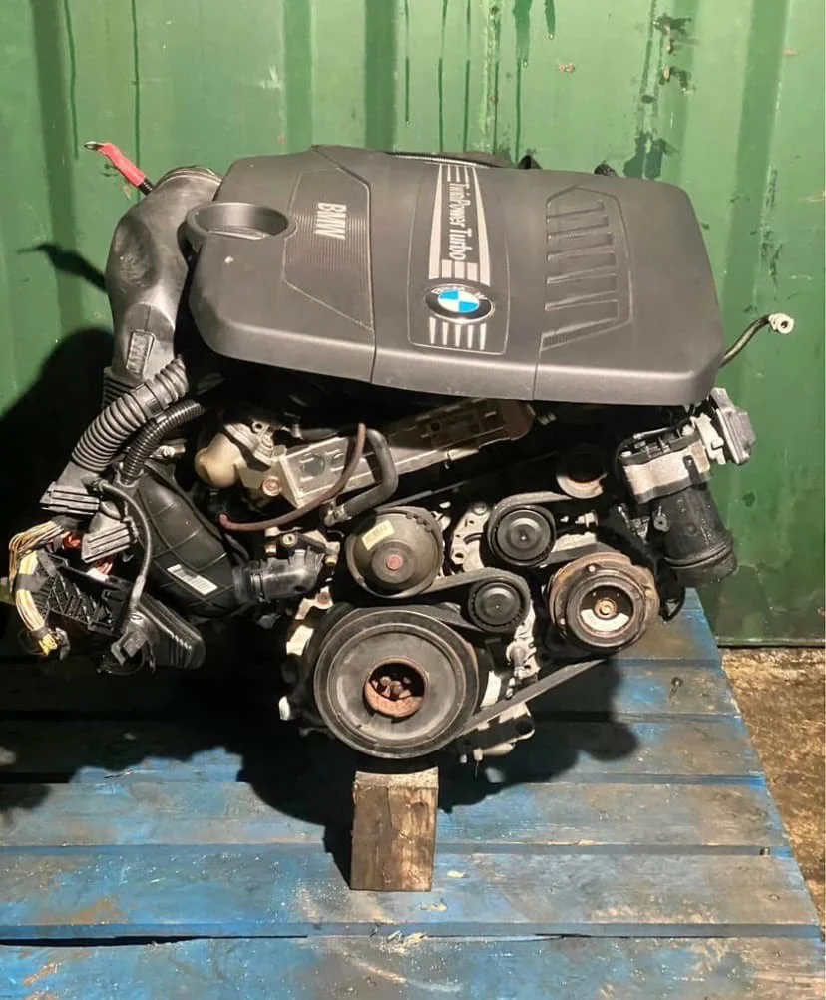
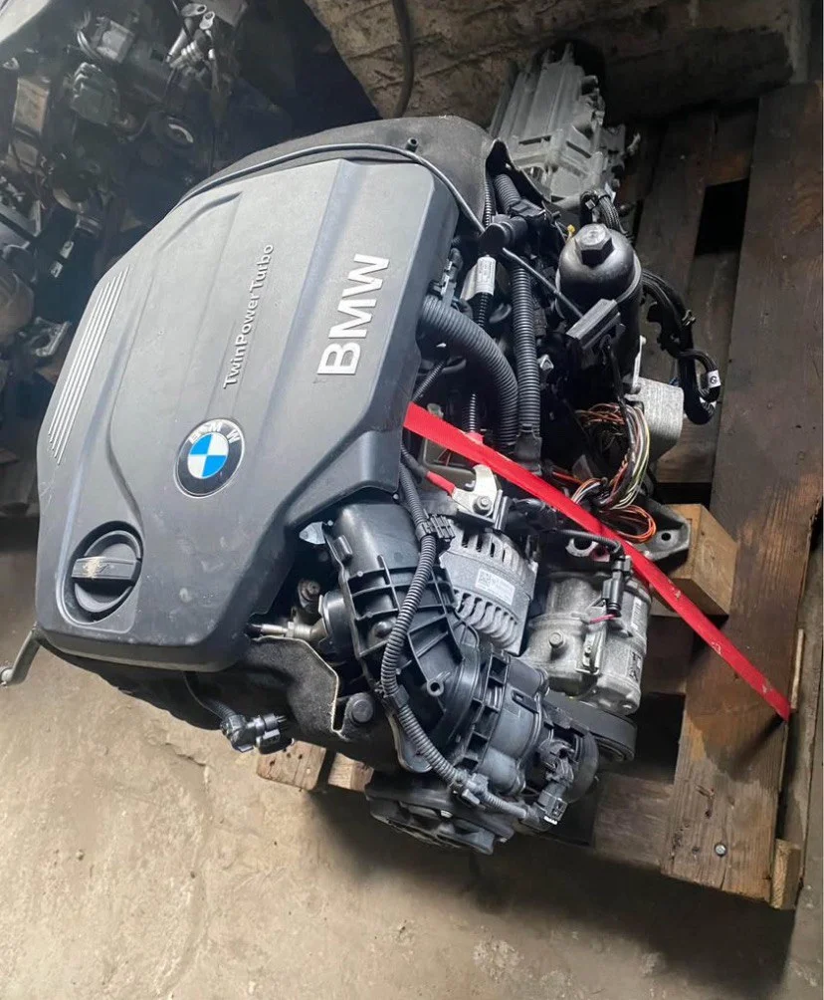
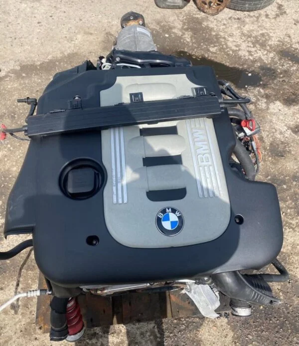

Overview
Bavarian Engines policies exist so every buyer — private motorist, independent garage, or export customer — understands warranty scope, returns, shipping liability, and privacy before ordering a high-value BMW engine online. Read these terms carefully; contact us on WhatsApp or email if anything is unclear.
Warranty policy — six months mechanical cover
All engines sold by Bavarian Engines include a six-month standard warranty on mechanical integrity for correctly installed units. Extended warranty options may be available on selected low-mileage donors — ask when you enquire.
What is covered
- Internal mechanical failure of block, head, and core internals present at dispatch
- Defects not caused by installation error, overheating, or lubrication failure
- Units installed per BMW procedures with correct fluids, filters, and oil priming
- Claims submitted with order reference, install date, mileage at fitment, and photo/video evidence
What is not covered
- Incorrect suffix ordered against our written VIN advice
- Improper installation, dry starts, or continued use after warning lights
- External ancillaries unless explicitly listed on the SKU (turbo, injectors, sensors)
- Labour, hire cars, or consequential losses
- Modified or stripped engines before claim assessment
To claim: contact us immediately — do not strip the engine before we advise. Provide clear documentation. We aim for fair, plain-language resolution.
Return and refund policy
Returns may be accepted within thirty days of delivery when prior authorisation is granted and the engine remains uninstalled, unmodified, and in received condition. Contact us before shipping any return. Return freight is customer responsibility unless we shipped the wrong suffix against our written confirmation.
Non-returnable situations
- Installed, modified, or disassembled engines
- Damage from improper handling or incorrect fitting
- Special-order items unless defective on arrival
- Engines where VIN mismatch was not confirmed with us pre-install
Approved refunds process within seven to ten business days to the original payment method. Original shipping fees are non-refundable.

Shipping policy
Worldwide shipping from Hamburg. Engines palletise or crate with commercial invoices and tracking. Typical timelines: EU three to five business days; UK and Ireland four to eight business days (customs dependent); international seven to fourteen business days. Out-of-stock items confirmed with ETA via email.
Delivery to workshops with forklift or loading bay access may differ from residential kerbside delivery — disclose access constraints when quoting freight. Risk transfers per agreed Incoterms stated on your invoice.
Compatibility and pre-installation confirmation
You must confirm VIN and stamp match in writing with us before installation. Fitting an engine without confirmation may void return and warranty rights if suffix mismatch occurs. We provide pre-payment verification specifically to prevent this outcome.
Privacy policy
We collect name, address, email, phone, VIN, and payment data to process orders and support enquiries. We do not sell personal data. You may request access, correction, or deletion by emailing sawfin@gmail.com. Industry-standard security protects stored information.
Payment terms
Proforma invoices precede engine preparation. Payment via SEPA, SWIFT, or Zelle as agreed. Engines crate after cleared funds. PayPal, Revolut, Wise, or escrow available on request for large international orders.
Warranty claim procedure — step by step
If you believe a mechanical defect exists on a correctly installed unit within the warranty period, stop driving where safe to do so and contact us with your order number, installation date, mileage at fitment, and clear photos or video of the issue. Do not strip, modify, or swap major components before we advise — premature disassembly can complicate assessment. Our Hamburg team reviews claims in plain language and explains next steps within a reasonable timeframe. Keep your invoice, proforma, stamp verification messages, and unboxing photos — they support fair resolution.
Trade customers and VAT
Business buyers with valid EU VAT numbers may qualify for reverse-charge treatment where applicable. We prepare formal VAT invoices on request. Listed prices reflect our standard trade setup; your accountant should confirm local treatment. Contact us before checkout if you need a written VAT breakdown for import or bookkeeping.
Why our policies protect buyers and workshops
High-value engine purchases require clear rules. Pre-payment VIN confirmation prevents the most common dispute — suffix mismatch. Documented crating and commercial invoices support export customs. Written warranty terms set expectations on mechanical integrity versus install error. Returns policy balances fairness with the reality that installed engines cannot be resold as unused stock. These policies exist because trust is earned when rules are understandable before money changes hands — not only when something goes wrong.

Data retention and communication
We retain order and communication records as needed to fulfil warranty and legal obligations. Marketing emails are not sent without consent. WhatsApp and email threads containing VIN data are used solely to confirm compatibility and fulfil your order. You may request deletion of non-essential data subject to legal retention requirements.
Bavarian Engines operates from Hamburg as a BMW-only engine exchange. Every unit is suffix-checked against your VIN before invoice, documented with donor mileage where available, and shipped with a written six-month mechanical warranty. You reach the same desk on WhatsApp after delivery — not a faceless marketplace listing.
We encourage buyers to compare suppliers on four questions: Will you confirm my stamp against VIN in writing? What exactly ships on this SKU? Can you provide compression or cold-start proof? Who answers technical questions after the crate arrives? Those answers define whether you should trust a supplier with a high-value engine decision.
Bavarian Engines policies prioritise fair treatment when documentation, installation discipline, and pre-payment VIN confirmation are followed — the same standards we apply to every motor exported from Hamburg.